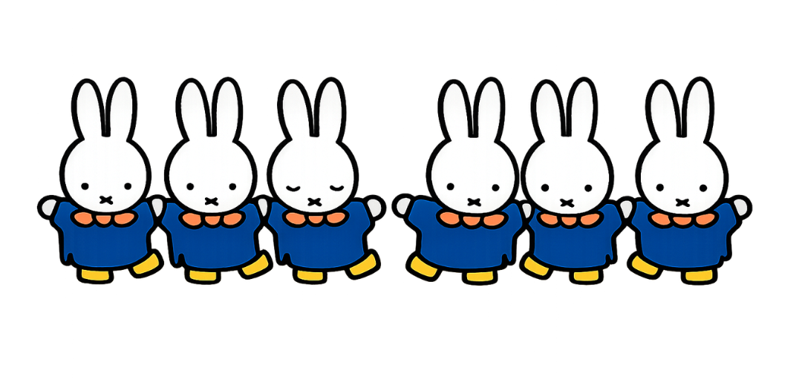
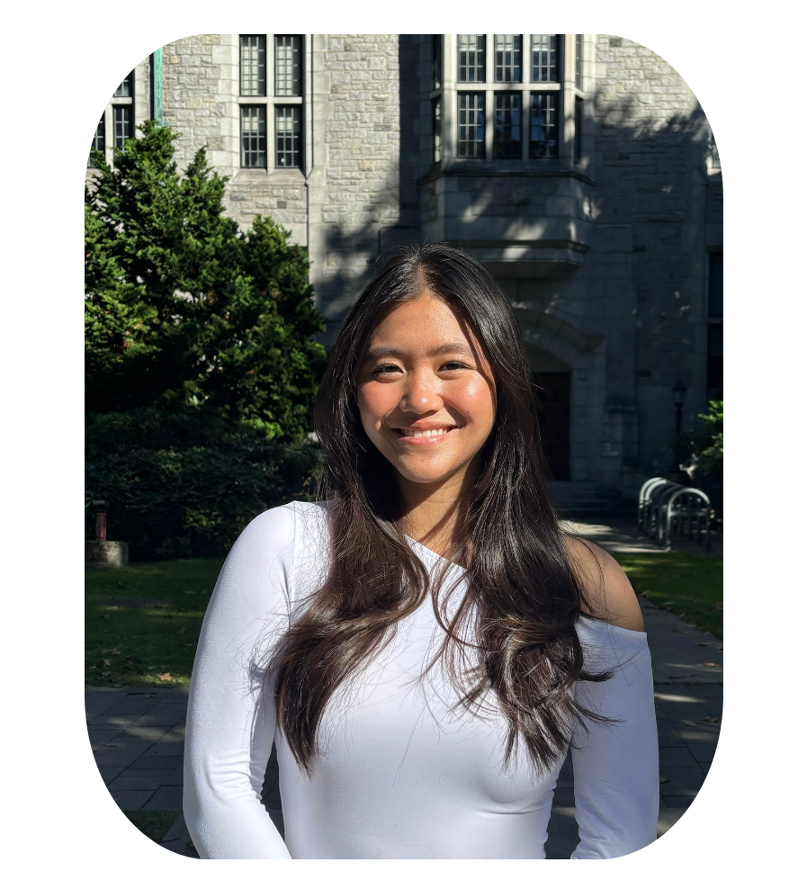
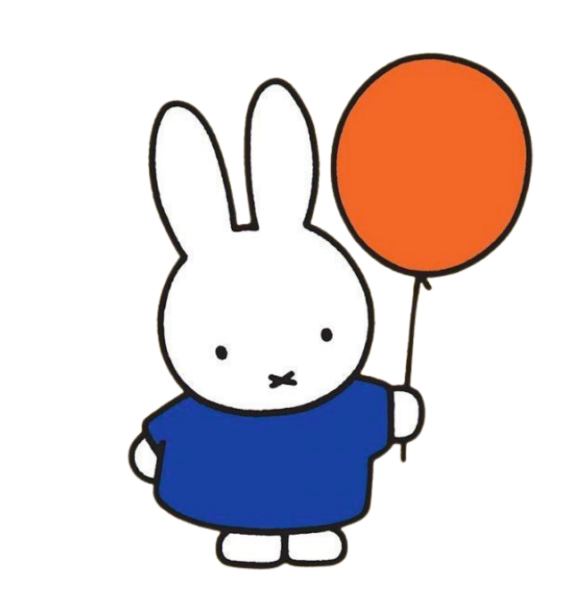

Fourth-year Biology student advocating for science students, greater transparency, and stronger academic support.
Vote Now

Hi! I'm Angela, a fourth-year Biology student and current AVP Communications for the Science Undergraduate Society. Over the past three years, I’ve had the opportunity to connect with science students and see firsthand the issues that matter most to our community.
As an AMS Representative, I want to ensure science students are heard and represented at the AMS level.

Clear communication about where student fees go.
Better study spaces and support for review sessions.
Ensuring science voices are represented in AMS decisions.
Voting takes less than a minute and helps shape student life at UBC.
Go to Voting